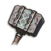
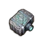
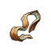
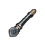
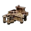

Granite Mauled is a secondary quest where players help Doric find valuable relics within Ashien's Watch.
Overview
- Good armour and weapons
- Weak antipoison potions or better
- Multiple goblins and garou
- Multiple giant rats and putrid rats inside the Vault
- Multiple vault guardians
- Exploding plant traps
Walkthrough
Starting off
The quest can be started by talking to Doric north-east of Fractured Plains. Doric is located south of Ashien's Watch on a lookout with ruins on it. There's a broken bridge leading over to the other side as well. He will tell you that Ashien's Watch was where all the "valuable relics and supplies" were located during the time of the dragon, and he was looking for it. But he was chased away — and now he wants your help.
Skeklac Kara
Once you have located and activated all four statues in Ashien's Watch, enter the Skeklac Kara vault. Make sure to bring forms of antipoison (cooked food with poison resistance or some weak antipoison potions), as there are putrid rats and poisonous gas bubbles that explode and poison you. Make sure to check for blind spots, as the gas bubbles are in many corners and can deal high damage to the player. Upon reaching the lever that opens the vault corruptor's doors, the corruptor can deal high damage and poison in addition to putrid rats in the area. It is recommended to use ranged weapons or magic to avoid getting hit.
After defeating the boss at the end, interact with the statue, and you will receive a blueprint. Bring the blueprint back to Doric for translation.
Quest Completed!
Rewards
Upon completing this quest players gain the ability to create:

Granite Maul
Imbued Granite Maul Head (awarded to the player upon quest completion)
Imbued Leather Wrappings
Ornate Maul Handle
The primary reward is the ability to create the Granite Maul, a masterwork weapon.
| Item | Special Attack | Damage | Crafting Materials | Facility | Misc. Information |
|---|---|---|---|---|---|
| Granite Maul | Battering Ram | 66 - 96 |  Blacksmith's Bench |
This weapon can be upgraded using Ascension Cores. |
This guide is the wiki's Granite Mauled article, by its editors, reformatted for this site. Licensed CC BY-NC-SA 3.0.